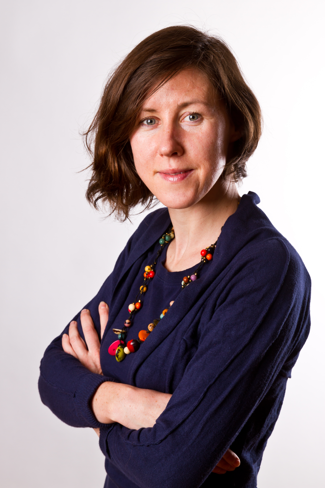

Dr hab. Joanna Sułkowska is a head of the "Interdisciplinary laboratory for modeling biological systems" at the Centre of New Technologies at the University of Warsaw. In 2007 she defended with distinction her doctoral dissertation in the field of biophysics, devoted to the characteristics of mechanical properties of proteins. In 2016 she obtained her habilitation at the Faculty of Chemistry of the University of Warsaw and professor position in 2018. For several years, as part of a postdoctoral internship, she worked at the University of California, San Diego. She is an author of over 80 scientific publications. Joanna Sulkowska has been awarded many times for her scientific achievements. She received e.g. Installation and Young Investigator award from the European Molecular Biology Organization (EMBO), grants from the National Science Centre, the Foundation for Polish Science, and the Ministry of Science and Higher Education in Poland. She is the winners of the 2018 National Science Centre Award in Poland in the field of Life Sciences, and award from MNiSW, 2020. She received the international prize Unesco-L'Oreal ''Rising talent''. She was chosen as a person of the year “MocArty – człowiek roku 2017” by Polish Radio RMF Classic. She was also ranked among the group of 50 brave people and in the initiative Jutronauci by Gazeta Wyborcza (PL) in 2017. She gave as well many public lectures.
For her greatest scientific achievement so far, she considers a discovery and characterization of non-trivial topology in proteins such as knots, slipknots, lassos and theta curves, the determination of mechanisms of their formation and relationships with biological function.